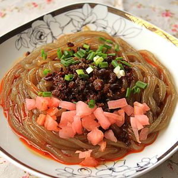
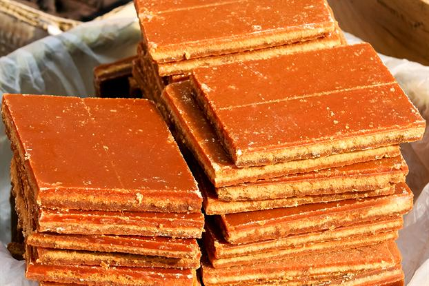

葛 面
|  | 相传宋时饥荒，百姓为填饱肚子时山去挖葛根，发现里面淀粉很多，于是做成葛面。葛面粗圆滑亮，用开水烫煮后，加上葱、姜、香工菜、酸萝卜和油发辣子，味道香辣，不仅是一道名小吃，而且还有生津、发汗、解热等功能。 | ||
|
|||
|---|---|---|---|
|  | 片糖是禾本科草本植物甘蔗的茎经压榨取汁炼制而成的赤色结晶体，又名蔗糖。片糖就是片状的糖块，有红片糖、冰片糖等。 片糖中含有的多种维他命和抗氧化物质，能抵抗自由基，重建和保护细胞基础结构，维护细胞的正常功能和新陈代谢。片糖中含有的氨基酸、纤维素等物质，可以有效保护和恢复表皮、真皮的纤维结构和锁水能力，强化皮肤组织结构和皮肤弹性，同时补充皮肤营养，促进细胞再生。 | ||